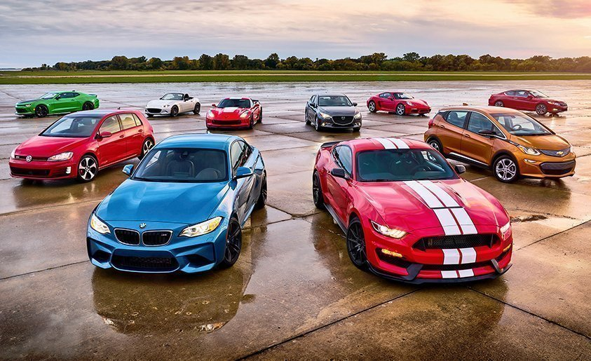

| Cars | |
|  BMW AG (аббревиатура от Bayerische Motoren Werke AG, с нем.«Баварские моторные заводы») — немецкий производитель автомобилей, мотоциклов, двигателей, а также велосипедов. Председателем компании на сегодняшний день является Норберт Райтхофер, а главным дизайнером — Карим Хабиб. Девиз компании — «Freude am Fahren», с нем.«С удовольствием за рулем». Для англоязычных стран был придуман также «The Ultimate Driving Machine». Audi AG — немецкая автомобилестроительная компания в составе концерна Volkswagen Group, специализирующаяся на выпуске автомобилей под маркой Audi. Штаб-квартира расположена в Ингольштадте (Германия). Девиз — Vorsprung durch Technik (рус. Прогресс через технологии). Председатель совета директоров — Маттиас Мюллер (нем. Matthias Müller).Объём производства в 2015 г. составил около 1 830 334 автомобилей. В 2012 г. немецкие специалисты по автомобилям сделали рейтинг лучших подержанных авто. Авто марки Audi признали лучшей среди подержанных авто. |
|
| Mail All rights are reserved. 2017 |
|